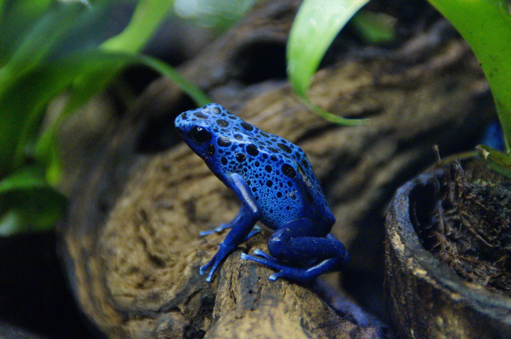
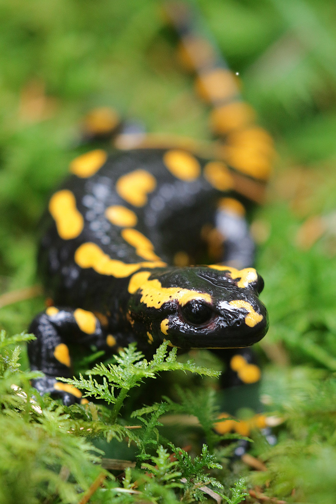
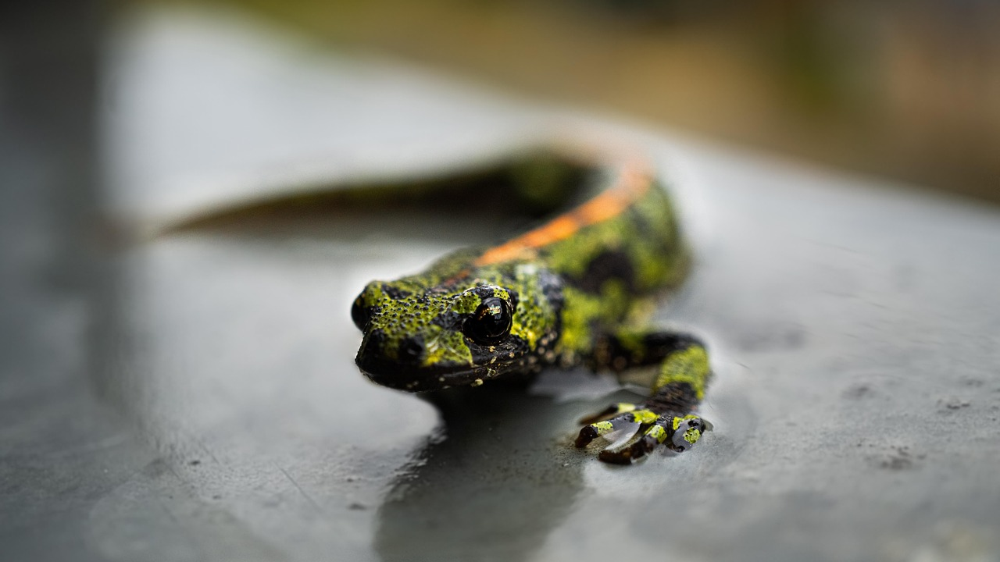

<html>
<head>
    <title>Menú Desplegable</title>
    <style>
          
    body { font-family: Arial, sans-serif; }
    
    .menu { margin: 0; padding: 0; list-style: none; }
    .menu li { float: left; position: relative; width: 150px; background-color: #333; }
    .menu li a { display: block; padding: 15px; color: white; text-decoration: none; text-align: center; }
    .menu li a:hover { background-color: #555; }

    .submenu { display: none; position: absolute; top: 100%; left: 0; margin: 0; padding: 0; list-style: none; }
    .submenu li { background-color: #444; width: 100%; }
    
    .menu li:hover > .submenu { display: block; }
 
    </style>
</head>
</html>
<body>

    <ul class="menu">
        <li><a href="#">Peces</a>
            <ul class="submenu">
                <li><a href="https://www.fishipedia.es/pez/betta-splendens">Pez Betta</a></li>
                <li><a href="https://www.fishipedia.es/pez/holacanthus-ciliaris">ángel reina</a></li>
                <li><a href="https://www.fishipedia.es/pez/hyphessobrycon-eques">Tetra serpae</a></li>
                <li><a href="https://www.tomscatch.com/es/especies-de-peces/marlin-blanco-11">Marlin Blanco</a></li>
                <li><a href="https://www.fishipedia.es/pez/hyphessobrycon-erythrostigma">Megalamphodus</a></li>
            </ul>
         </li>
        <li>
            <a href="#">Mamiferos</a>
            <ul class="submenu">
                <li><a href="gorila.html">Gorila</a></li>
                <li><a href="lemur.html">Lemur</a></li>
                <li><a href="#">Animal 3</a></li>
                <li><a href="#">Animal 4</a></li>
                <li><a href="#">Animal 5</a></li>
            </ul>
        </li>
        <li><a href="#">Anfibios</a>
            <ul class="submenu">
                <li><a href="anfi2.html">Anfibios</a></li>
            </ul>
        </li>
        <li><a href="#">Aves</a>
            <ul class="submenu">
                <li><a href="https://www.nationalgeographicla.com/animales/loros">Loro</a></li>
                <li><a href="https://www.faunia.es/planea-tu-visita/animales/tucan-toco">Tucan Toco</a></li>
                <li><a href="https://deanimalia.com/selvaaguilafilipina.html">Águila Monera</a></li>
                <li><a href="https://aveschile.cl/picaflor-2/">Colibrí de Arica</a></li>
                <li><a href="https://laberintoenextincion.blogspot.com/2009/10/maca-tobiano.html">Macá Tobiano</a></li>
            </ul>
         </li>
         <li><a href="#">Reptiles</a>
        <ul class="submenu">
                <li><a href="coco.html">Cocodrilo De Agua Salada</a></li>
                <li><a href="torta.html">Tortuga gigante de galapagos</a></li>
                <li><a href="komodo.html">Dragon De Komodo</a></li>
                <li><a href="cama.html">Camaleon</a></li>
                <li><a href="ser.html">Serpiente De Cascabel</a></li>
            </ul>
         </li>
         <li><a href="index.html">Menu Principal</a>
         </li>
    </ul>
</body>
</html>

<html>
<head>
    <title>Anfibios</title>
</head>
<body background="rio.jpg" text="white">

<hr align="center" color="red" width="75%">
<center><h3 id="Menu">Menu</h3></center>
<center>
    <a href="#Ajolote">Ajolote</a><br>
    <a href="#Rana Azul">Rana Azul</a><br>
    <a href="#Salamandra">Salamandra</a><br>
    <a href="#Triton Crestado">Triton Crestado</a><br>
    <a href="#Rana de ojos rojos">Rana de ojos rojos</a>
</center>
<hr align="center" color="red" width="75%">

<marquee width="100%" height="50" bgcolor="pink" align="center">
    <h2 id="Ajolote">Ajolote</h2> 
</marquee>
<center><h2><font color="red" face="calibri">(Ambystoma mexicanum)</font></h2></center>
<center> </center>
<ol type="1">
    <li>Neotenia (Madurez larvaria): A diferencia de otras salamandras, el ajolote no sufre una metamorfosis completa. Conserva sus branquias externas (esas "ramas" a los lados de la cabeza) y su aleta dorsal durante toda su vida adulta, viviendo siempre bajo el agua..</li>
    <li>Capacidad regenerativa prodigiosa: El ajolote puede regenerar extremidades completas, la cola, órganos vitales e incluso partes de su cerebro y corazón sin dejar cicatrices.
</li>
    <li>Respiración múltiple: Tiene pulmones funcionales, pero principalmente respira a través de sus branquias externas, su piel y la boca (respiración bucofaríngea), lo que le permite vivir en el fondo de lagos.</li>
    <li>Endemismo y hábitat restringido: Es una especie única de México, originaria de la zona lacustre de Xochimilco y Chalco. Vive en aguas tranquilas, profundas y con mucha vegetación.
</li>
    <li>Carnívoro de hábitos nocturnos: Se alimenta de pequeños crustáceos, larvas de insectos, gusanos y peces pequeños. No mastica, sino que succiona a sus presas con su gran boca</li> 
</ol>
<center>
    <a href="#Menu">Volver al Menu</a><br>

<marquee width="100%" height="50" bgcolor="pink" align="center">
    <h2 id="Rana Azul">Rana Azul</h2> 
</marquee>
<center><font color="red" face="calibri"><h2>(Dendrobates azureus)</h2></font></center>
<center> </center>
<ol type="1" align="left">
<li>Coloración Aposemática (Advertencia): Su intenso color azul brillante, a menudo con manchas negras, no es para camuflarse, sino para advertir a los depredadores sobre su alta toxicidad.</li>
<li>Piel Altamente Venenosa: Segrega a través de su piel un potente veneno neurotóxico, obtenido por su alimentación natural a base de hormigas y ácaros en la selva.
</li>
<li>Dieta Especializada: Es insectívora. En libertad se alimenta de hormigas, escarabajos, moscas y pequeños invertebrados, lo que le permite generar su veneno.
</li>
<li>Hábitat y Tamaño: Son pequeñas (miden entre 3 y 5 cm) y habitan en los bosques tropicales de Surinam y Brasil, viviendo en áreas húmedas, rocosas y cercanas al agua.</li>
<li>Comportamiento Territorial y Reproductivo: Son diurnas y muy territoriales, defendiendo su zona con cantos. Durante el cortejo, la hembra pelea por el macho y pone los huevos en sitios húmedos, cuidándolos el macho. </li>
</ol>
<center>
    <a href="#Menu">Volver al Menu</a><br>
</center>
<hr align="center" color="red" width="75%">

<marquee width="100%" height="50" bgcolor="sky blue">
    <h2 id="Salamandra">Salamandra</h2>
</marquee>
<center><font color="red" face="calibri"><h2>(Caudata)</h2></font></center>
<center> </center>
<ol type="1" align="left">
<li>Regeneración excepcional: Tienen la capacidad de regenerar extremidades completas, colas, e incluso órganos como el corazón o partes del cerebro.</li>
<li>Piel húmeda y respiración: Necesitan hábitats húmedos porque respiran a través de la piel (respiración cutánea) y pulmones; algunas especies incluso carecen de pulmones y respiran solo por la piel y la boca.</li>
<li>Defensa química: Muchas especies poseen glándulas que segregan veneno (neurotoxinas) para defenderse, a menudo indicado por colores brillantes como manchas amarillas o naranjas sobre fondo negro.</li>
<li>Ciclo de vida bifásico: Generalmente, comienzan su vida como larvas acuáticas con branquias y, tras una metamorfosis, se convierten en adultos terrestres (aunque algunas especies son acuáticas toda su vida).</li>
<li>Alimentación carnívora: Son depredadores que se alimentan de invertebrados pequeños como lombrices, insectos, arañas y caracoles.</li>
</ol>
<center>
    <a href="#Menu">Volver al Menu</a>
</center>
<hr align="center" width="75%" color="sky blue" size="5">
<marquee width="100%" height="40" bgcolor="sky blue"><h3> ♡ ♡ ♡ </h3></marquee>
<center><h2 id="Triton Crestado">Triton Crestado</h2></center>
<center><font color="red" face="calibri"><h2>(Triturus cristatus)</h2></font></center>
<center> </center>
<ol type="1" align="left">
<li>Cresta dorsal en machos (reproducción): Durante la época de cría, los machos desarrollan una cresta prominente y ondulada en el dorso que se interrumpe en la base de la cola y continúa en la cola.</li>
<li>Vientre naranja/amarillo con manchas negras: El vientre presenta un patrón único de color naranja intenso o amarillo con manchas negras irregulares, el cual es utilizado para identificar individuos.</li>
<li>Piel rugosa y coloración oscura: A diferencia de otros tritones, tienen la piel con un aspecto verrugoso o granular, de color marrón oscuro o negro en el dorso y los costados</li>
<li>Gran tamaño (el más grande de Europa): Es considerado uno de los tritones más grandes de Europa, pudiendo alcanzar los 18 cm o incluso más en algunas especies</li>
<li>Comportamiento semiaquático y nocturno: Son animales nocturnos que pasan la primavera en el agua para reproducirse y el resto del año en hábitats terrestres húmedos, a menudo bajo tierra o refugios, mostrando gran fidelidad a sus charcas de cría.</li>
</ol>
<center>
    <a href="#Menu">Volver al Menu</a>
</center>
<marquee width="100%" height="50" bgcolor="sky blue"><h2 id="Rana de ojos rojos"> Rana de ojos rojos </h2></marquee>
<center><font color="red" face="calibri"><h2>(Agalychnis callidryas)</h2></font></center>
<center> </center>
<ol type="1" align="left">
<li>Ojos rojos saltones: Poseen ojos grandes y de un rojo intenso que utilizan para aturdir a depredadores mediante la "coloración de sobresalto".</li>
<li>Coloración vibrante y camuflaje: Su cuerpo es verde neón para camuflarse al dormir, pero muestran flancos azul/amarillo y patas naranjas para asustar al moverse</li>
<li>Hábitos nocturnos y arborícolas: Viven en los árboles cerca de agua y son activas principalmente de noche; durante el día duermen bajo las hojas.</li>
<li>Reproducción en las hojas: Ponen sus huevos en hojas que cuelgan sobre cuerpos de agua, y al nacer, los renacuajos caen directamente al agua.</li>
<li>Dedos con ventosas: Sus dedos terminan en discos adhesivos (ventosas) que les permiten trepar y adherirse firmemente a la vegetación.</li>
</ol>
<center>
    <a href="#Menu">Volver al Menu</a>
</center>
</body>
</html>